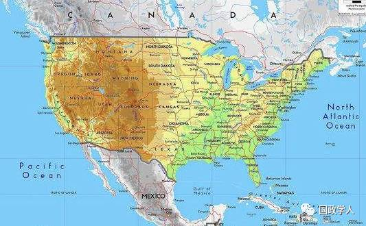
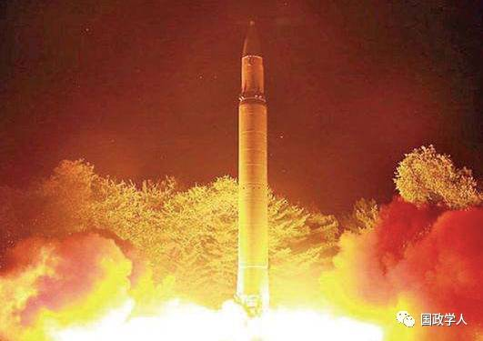
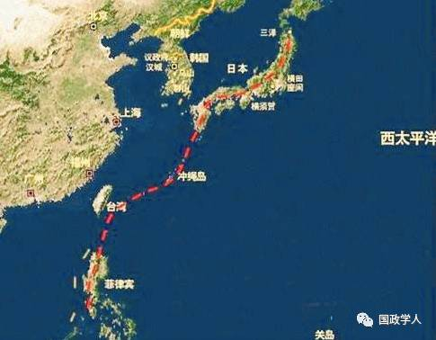

收录于合集

简
约翰·米尔斯海默
美国著名学者，芝加哥大学政治学教授，进攻性现实主义的创始人，著有《大国政治的悲剧》
斯蒂芬·M·沃尔特
哈佛大学贝尔福国际关系教授，著有《驯服美国权力:对美国首要地位的全球回应》
2016年4月一项皮尤调查显示：57%的美国人认为美国应该“管好自己”，美国对别的国家并不负有义务。 这是近几十年来，美国第一次出现众多民众公开质疑美国大战略的情况 。 这种质疑与厌恶伴随过去1/4世纪里美国的相对衰弱和其它国家的抵制而越来越明显。
在亚洲，印度、巴基斯坦、北朝鲜都在发展核军事，中国日益挑战周边海域的现状；在欧洲，俄国吞并克里米亚，美俄关系落入冷战以来新低谷。美国军队还深陷阿富汗和伊拉克的战场，基地组织依然横行。因为美国政权变更的决定，阿拉伯世界陷入了混乱，ISIS横空出世。与此同时，民主已经在全球衰退， 美国使用酷刑、定点清除达到政权变更的目的，却玷污了人权和国际法捍卫者的形象 。
这些问题很大程度上是由于美国推行自由主义霸权战略导致的。这一战略要求美国不仅要解决全球问题，还要推动建立基于国际机制、代议制政府、开放市场和人权的世界秩序。但是对美国来说，更好的方式是采取“离岸平衡”战略。
离岸平衡不再要求美国做“世界警察”，而是鼓励其它国家带头制衡正在崛起的国家，美国只在必要情况下才介入。 这并不意味着美国放弃世界超级霸主的地位，而是通过节制美国的力量，以应对长远的威胁，确保自由的美国 。通过离岸平衡战略，华盛顿可以放弃改造其它社会的野心计划，专心解决真正重要的现实问题：维持美国在西半球的统治地位，应对欧洲、东北亚和波斯湾的潜在霸权国。
确立正确的目标
美国是现代历史上最幸运的大国 。其它大国大多面临邻国的威胁—即使英国也曾遭受过数次跨越英吉利海峡的入侵—而美国过去200多年从未遭受领土入侵。正如时任法国驻美大使Jean-Jules Jusserand（任期1902-1924）所言，“美国北边是一个虚弱的邻居，往南也是一个虚弱的邻居，东边是大海，西边也是大海”。此外，美国拥有大量的土地和自然资源、庞大而年轻的人口，以及数以千计的核武器。这一切造就了一个不受领土威胁的世界经济和军事大国， 这些地缘政治的天赋也常成为美国自我放纵的理由 。

美国独特的地理位置，对其政治、军事有着决定性的指导作用
与孤立主义不同，离岸平衡认为美国有必要将势力投放到西半球以外的战略要地。如今，对美国最重要的三个地区是：欧洲、东北亚和波斯湾。前两个地区是工业力量的中心，并汇聚了主要的世界大国；而后一个地区则是全球最重要的石油产区。
欧洲和东北亚的首要关注点是地区性霸权国的崛起，目前最重要的是俄国和中国。 美国在这一地区的首要目标应该是维持地区均势，利用周边国家制衡崛起国，使其陷入对周边安全的担忧而无暇顾及对西半球的权力渗透；在海湾地区，美国要限制可以干涉石油交易的霸权国崛起，以免其威胁美国及全球经济 。
离岸平衡是一个现实主义的大战略，但其目标应是有限的。“促进和平”尽管令人向往，但并不是离岸平衡的既定目标。这并不意味着华盛顿乐见世界动乱，也无意否定外交或经济手段达成和平的可能性，而是强调动用军事力量的审慎，维护和平不能成为离岸平衡的唯一目的。正如1994年卢旺达大屠杀，离岸平衡不能也无力应对这一问题。
怎样运转
在离岸平衡战略下，美国可以根据三个关键地区的权力分配调整自己的军事布局 。如果欧洲、东北亚或海湾地区当前没有潜在霸权国，就没有理由在该地区部署地面或空中力量，也不用在国内建设大型军事设施。也因为霸权崛起是一个长期过程，美国有足够时间应对。
美国应该将地区力量作为第一道防线，让它们与邻国维持权力均势。如果这些国家无力独自应对，美国必须帮助它们，布置足够的火力以扭转权力的失衡。冷战期间美国在欧洲部署大量武力，因为美国认为欧洲无力独自抗衡苏联。而在其它情况下，美国需要等待时机，直到其中一方很可能成为地区霸主的时候才出场，比如二战中美国的参战破灭了德国统治欧洲的美梦。
二战中美国的参战破灭了德国统治欧洲的美梦。图中为1943年2月的艾森豪威尔，当时刚刚被任命为盟军欧洲战场最高统帅。
本质上，离岸平衡的目标是尽可能久地维持离岸平衡状态，只在必要情况下上岸。如果上岸，美国要尽可能让盟国投入其中，而自己应尽快伺机撤离。
离岸平衡有许多优点，比如：通过限制军队的投入，可以减少华盛顿的国防开支，拉动国内投资与消费；离岸平衡也可以减少恐怖主义。 自由主义霸权战略要求美国向全世界推广民主，这种忽视差异与多样性的民主干预导致民族仇恨，而反对者难以直接撼动美国，往往求助于恐怖主义 。离岸平衡通过减少美国的军事介入缓解这一问题。美国军队只在潜在霸权国将要威胁其它国家时出现，这样可能的受害国就会将美国视为拯救者而非占领者。而一旦危机解除，美军就扬帆远去，通过对其它国家主权的尊重，离岸平衡几乎不可能导致反美恐怖主义。
历史的验证
离岸平衡在今天看来是一个极端的战略，但过去许多年的美国外交政策中都可以看到其内在逻辑。美国从19世纪开始对外扩张，在西半球建立霸权，到19世纪末，美国开始专注于维持欧洲和东北亚的均势，但手段却是让这些地区的大国互相牵制，直到均势被打破才直接军事干涉。冷战期间，美国别无选择只有在欧洲和东北亚上岸，并加入朝鲜战争以对抗苏联在东北亚的影响力。在海湾地区，美国维持离岸平衡，让英国领导这一地区，直到其于1968年宣布撤出，美国才卷入其中。当1979年伊朗霍梅尼革命后，卡特政府开始建立“快速行动部队”（RDF）以防止伊朗或苏联控制该地区。里根政府在1980-1988年的两伊战争中支援伊拉克也是出于同样目的。这种离岸平衡的状态一直维持到1990年，萨达姆吞并科威特破坏了地区均势，美国布什政府领导了对伊拉克的军事行动。
1990年8月2日，萨达姆政府指挥下的伊拉克共和国卫队对科威特发动突然进攻，占领科威特首都及全境。1991年1月17日，以美国为首的多国部队轰炸巴格达，海湾战争爆发。
近100年的历史验证了一个道理，离岸平衡的要旨是防止威胁性地区霸主的出现，以维持全球权力均势，增强美国的安全。而一旦美国决策者偏离了离岸平衡战略——比如，在越南的所作所为——其结果是代价高昂的失败。冷战后的欧洲也是如此。苏联崩溃后，美国最好的选择是逐渐减少军事存在，与俄国维持良好关系，让欧洲人自己维持自己的安全。但相反，美国步步紧逼，不断扩展北约（NATO），忽视俄国的利益考虑，激化了乌克兰问题，迫使中俄接近。在中东地区，美国同样也应该在海湾战争结束后远去，让伊朗和伊拉克彼此平衡。但克林顿政府却采取“双重遏制”政策，企图同时制衡伊朗和伊拉克。实践证明是失败的。
霸权虚伪的希望
自由主义霸权战略的捍卫者会提出很多依据证明自己，其中最常见的是： 只有强大的美国领导力才能维持世界秩序。但全球领导力并不是最终目的，只有直接增进国家利益才值得尝试 。
有人会进一步指出，美国的领导是克服集体行动困境的必要手段。但离岸平衡并不反对美国适时介入，也不禁止美国向关键地区的友好国家提供建议和物质援助。
其它自由霸权支持者也许会说，诸如失败国家、恐怖主义、网络犯罪、难民问题等新型跨国威胁日益凸现，美国必须维持领导力以应对这些问题。亚太地区缺乏足够的保护能力，而美国现代军事科技却能保证美军的全球投放能力。这一观点夸大了威胁，也高估了美国。犯罪、恐怖主义等问题很难用军事手段解决，特别是重复性的军事干涉会滋生仇恨和腐败，反而导致问题恶化。长期的解决措施应是当地政府的能力提升而非依靠美国充当全球警察。
企图维持现状者担心离岸平衡会允许其它国家挑战美国的领导地位。恰恰相反，离岸平衡将策略集中于国家核心目标反而延长了美国的统治 。
还有一些人认为，美军的全球存在可以维持和平，保护开放的世界经济，缩减军事存在将刺激大国经济竞争，最终引发战争。与重新经历20世纪30年代的大萧条相比，美国还是做世界警察比较安稳。这种担忧很难令人信服。依此逻辑，如果美国与欧洲交往更深，二战很可能就不会爆发。
 2017年7月29日，据朝中社29日报道，朝鲜28日晚成功进行了第二次“火星－14”洲际弹道导弹试射，这使得朝核问题进一步升温。
自由霸权战略的支持者还称，美国必须保持全球存在以防止核扩散。如果美军从关键地区撤出，原本依赖美国保护的国家不得不获得核武器以保护自己。但这一论点忽视了，正是在自由霸权战略下，印度与巴基斯坦开展核竞赛、北朝鲜成为有核国家、伊朗的核项目取得重大进展。美国的全球霸权正是刺激这些国家发展核武器的主因。通过削减美国的军事存在，离岸平衡可以缓解核扩散困境。核扩散还会继续存在，但离岸平衡是应对这一问题的最佳策略。
民主的幻觉
其它反对离岸平衡策略的人认为美国负有推动和平、保卫人权的道德责任。但没人注意到 如果世界只有一种自由民主，将最终导致矛盾 。美国一心推动和平，但却陷入无尽的战争。更糟的是，暴力支撑的自由主义价值会腐蚀国内的民主政治，虐囚、定点清除和网络监管等问题都是表征。
美国推广自由民主的最佳途径应该是成为自由民主的“榜样”。这样别的国家认可美国是一个公正、繁荣和开放的社会，就会支持和学习美国。这意味着，美国应该更多地改善国内状况，少去操纵国际事务。
选择性接触的问题
现在有一种提法认为，华盛顿应该反对自由主义霸权，但要在欧洲、东北亚和波斯湾维持成规模的军力以应对可能的问题。这种低成本的保险策略有时被称为“选择性接触”（selective engagement）。听起来不错但也行不通。
接触一旦开始就很可能演变成自由主义霸权。美国一旦承诺保护关键地区的和平，就会基于“民主国家之间不会发生战争”的信条而推广民主。这是冷战后北约继续扩张的主要原因。在现实世界，选择性接触与自由主义霸权的界线很容易被逾越。
选择性接触的效度是有限的。在欧洲，美国无力阻止20世纪90年代的巴尔干战争、2008年的俄格战争以及现在的乌克兰危机；在中东，美国需要对最近的几次战争负责；在南中国海，矛盾日益成为现实。选择性接触也无法解决推卸责任（Buck- passing）的难题。当北约正面临俄罗斯威胁的时候，英国从欧洲大陆撤走了军队，美国再次成了救火队长，即使欧洲和平本应是欧洲的头等大事。
行动策略
当今世界的离岸平衡战略应该是什么样的？好消息是美国西半球的霸权没有受到挑战，在欧洲和波斯湾目前也没有潜在的霸权国出现； 坏消息是中国继续快速崛起，很可能攫取亚洲的霸权。美国应该采取行动阻止其成功 。
理想情况下，华盛顿会依靠周边国家约束中国，但可能无法奏效。不仅因为中国远比邻国强大，也因为这些邻国彼此远隔，难以形成高效的制衡联盟。美国应协调并支持它们，成为亚洲必不可少的国家 。

面对中国崛起，美国一直试图通过拉拢中国的邻国来遏制中国
在欧洲，美国要结束其军事存在，将北约交给欧洲。在海湾地区，美国应回归离岸平衡策略。至于ISIS，美国应该让该区域国家与之周旋，而美国只负责提供武器、情报和军事培训。ISIS的长远解决之道在于完善区域机制，这是华盛顿帮不了的。在叙利亚，美国应让俄国领头，如果内战继续那将成为俄国的大问题。目前，美国应与伊朗保持良好关系，更重要的是中国企图与海湾国家联盟，而伊朗很可能是首要目标。 阻挠中国与伊朗的军事合作是美国的重要利益选择。伊朗可能最终统治海湾地区，如果有此迹象，美国要帮助其它海湾国家制衡伊朗 。
离岸平衡的本质
综上，这些决策将极大地减少美国的国防开支。尽管美军还将留在亚洲，美军从欧洲和波斯湾的撤离将可能节省数十亿美元，降低反恐投入，并结束在阿富汗等地区的军事干涉。在可预见的将来，美国将有更多的钱用于国内发展，并提高纳税人的收入。
离岸平衡是基于美国核心传统与优势的大战略。它充分运用了美国得天独厚的地缘优势，和其它国家制衡强大邻国的动机与能力。它尊重国家主义，不去尝试将美国价值观输入外国社会，而致力于树立一个榜样。正如历史证明的，离岸平衡不仅是最贴近美国国家利益的战略，也是最切合美国人偏好的选择 。（本章仅代表作者观点，与本平台立场无关，希望能够给广大读者带来启发性思考。）
文章来源： 北外公共外交研究中心 ， **ForeignAffairs ，第95卷第4期 **
编译： 程铭 筛选： 凌羽 编辑： 里仝